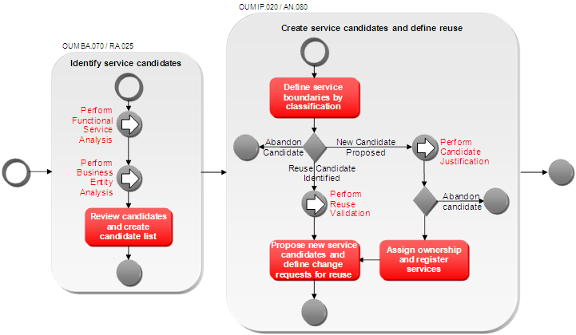
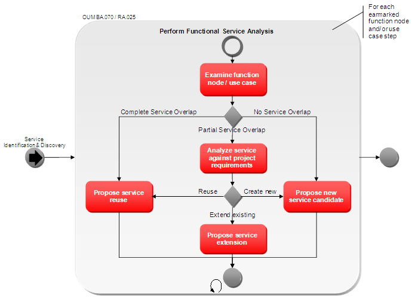
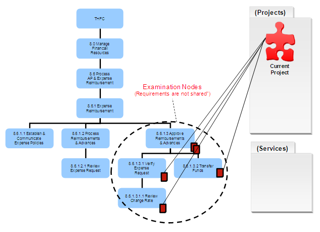
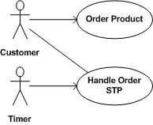
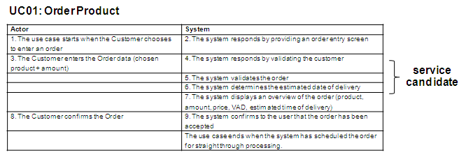
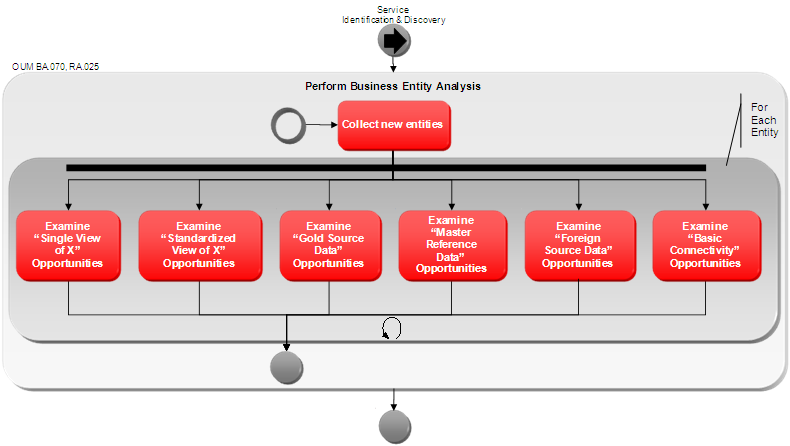
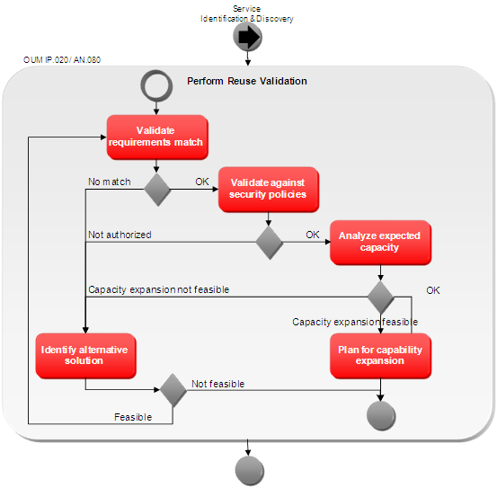
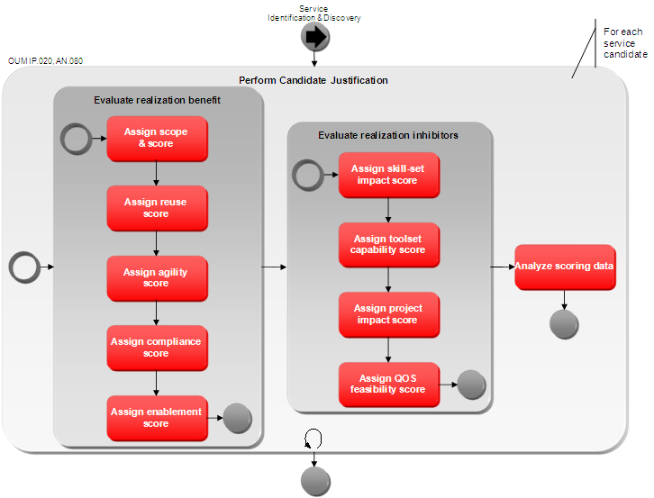
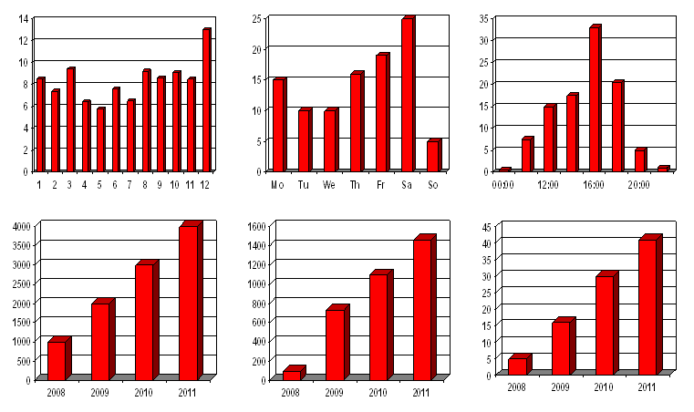

OUM |
Technique Overview |
||
Method Navigation |
Current Page Navigation |
||
|
|
||||||||
The purpose of this technique is to provide guidance on how to identify and discover service-oriented architecture (SOA) services.
Service Identification is concerned with new service candidates, whereas, Service Discovery aims at finding reuse of existing services. Service Identification and Service Discovery are done in concert and are initially one activity. However, the justification process for new services is different than that for service reuse. Service Identification and Discovery is a fundamental enabler of SOA. Therefore, a repeatable and pragmatic approach is required for the successful adoption of SOA. The following describes such an approach.
Service Identification begins with the analysis of requirements and ends with a set of identified service candidates. In order to achieve effective SOA, applications simply cannot be developed independently of one another. SOA applications utilize shared services, which are not owned by any single application, have their own lifecycle (separate from any application), and are managed independently. In order to be effective in managing requirements within a SOA, projects have to be aware of the requirements of existing applications, in-flight projects, as well as proposed projects. To achieve this, requirements related to SOA services must be managed at the enterprise level. Review the Enterprise Requirements Management technique for more details about this. This technique assumes that requirements are already identified and earmarked at the enterprise level.
Service candidates represent the set of business functions that are recognized as candidates for reuse. A service candidate does not necessarily map one-to-one to a service as it actually will be delivered. For example, during analysis, a more coarse-grained service may be identified that covers the requirements of two or more of the initial candidate services. However, during Service Identification, this kind of analysis is out-of-scope and is instead, part of Service Definition. Review the SOA Service Boundary Analysis technique for more details about this.
On the other hand, Service Identification is about more than simply identifying service candidates as it also includes justification of viable shared service candidates.
During Service Discovery, you discover existing services and planned services outside the scope of the project at hand that can be reused to fulfill some of the requirements of the project or application. This kind of analysis is done against the service portfolio and other existing requirements, business process models and other enterprise assets. Service Discovery is a natural follow-up of Service Identification, where existing services are discovered by working your way through the proposing service candidates.
The key enabler to Service Discovery is the availability of information, and knowing where to get that. Human instinct is a fundamental aspect of any analysis exercise to make decisions especially when not all of the required information is available. However, the more relevant information we can make available, the more repeatable, consistent, and effective this process will be.
An Analytical Approach to Service Identification and Discovery
The approach of Service Identification and Discovery is split into two major parts. First, the requirements are reorganized into two lists:
Next, a list is created for the project documenting:
Identified Service Candidates - This technique takes takes you through a process for Service Identification and Discovery. Depending on the type of project and work products available, the input is the collections of relevant process, used case and domain models. Examine these work products using an analysis approach from a functional as well as a business entity perspective.
The result of the process is a list of identified service candidates that have been justified as viable shared service candidates included in a Service Portfolio.No. |
Step | Component | Component Description |
|---|---|---|---|
1 |
Perform analysis from a functional perspective. | Functional Service Candidates | The Functional Service Candidates is a list of services identified from a functional perspective that are not yet covered by existing services or services planned outside the project. These are seen as potential new service candidates. |
2 |
Perform analysis from a business entity perspective. | Business Entity Candidates | The Business Entity Candidates is a list of business entities used in function/process models or use cases but not yet covered by existing services or services planned outside the project. These are seen as potential new service candidates. |
3 |
Review candidates and create candidate list. | Candidate List |
The Candidate List is the result of a review of the service candidates identified in steps 1 and 2. All candidates are analyzed at the enterprise level. It includes if the candidate is project-specific and therefore can be abandoned as a SOA service, or if the candidate should be further analyzed. All possible new candidates are added to a candidate list for further analysis. |
4 |
Define service boundaries by classification. | Candidate List with Service Boundaries | The Service Boundaries shows the classification of each candidate from step 3 by business category, scope and service layer. |
5 |
Perform reuse validation. | Validated Candidates | The Validated Candidates shows the result of a Reuse Validation process to determine if the project is authorized to reuse an existing service. Authorization decisions are not solely based on security policy but also on other aspects, such as, scalability, etc. |
6 |
Perform candidate justification. | Justified Candidates | The Justified Candidates is a list of candidates including scores to rate the benefits against risks. All new candidates in the list and all services that need to be changed for reuse, (meaning a new version needs to be proposed) will need to be justified. |
7 |
Propose new service candidates and define change requests for reuse. | Change Requests | The Change Requests contains requests to change existing services when reused is justified. For all existing services that need to be changed, a change request is created. |
8 |
Assign ownership and register services. | Registered Services | The Registered Services contains all new candidates and new service versions that have been justified and added to the Service Portfolio. This includes the classification information, the scores and the relationships to models, requirements and enterprise data entities. |
The steps to perform Service Identification and Discovery are listed above in the technique steps table. A number of these steps can be seen as procedures on their own, and will be explained for the appropriate steps. The figure below shows where the steps can be broken into smaller logical sub-processes.

There are two approaches to identify new service candidates and discover additional reuse candidates.
During Functional Service Analysis, you analyze the functional services of the earmarked Function or Process Model nodes and their requirements or the requirements of the earmarked use cases. This is geared towards identifying candidates in the business activity and presentation layer as well as reusable services in these layers.
Once reusable and new service candidates have been identified they are funneled through the reuse validation or the service candidate justification procedures (respectively).
During this process, the functional activities and their attached requirements are examined to discovery reuse candidates. All activities not yet covered by services will get potential new service candidates.
The Functional Service Analysis process is illustrated below:

When starting the process for Service Identification and Discovery as described in this technique, you use the Function or Process Models (from Envision), Future Process Models (from Implement) and Use Cases (Envision or Implement) created during Requirements Management as input (refer to Enterprise Requirements Management technique). The function nodes of the Function or Process Models or use cases that are linked to the project provide the input to Service Identification and Discovery. You should examine each function node using a data approach and functional service approach to discover reuse candidates and identify functionality not yet covered through services. In this way, you uncover possible service candidates.
The business functions with attached projected requirements are examined and analyzed. By examining the requirements of each functional service, reuse candidates, Business Process Service Candidates and Business Activity Service Candidates are identified.
When examining a business function node, there are three potential scenarios:
If all requirements within the function node being examined are linked to the current project and are also linked to one or more shared services, then this is known as a "Complete Service Overlap."

In the figure above, the node "8.6.1.3.2 Transfer Funds" is being examined. In this node, all of the requirements are both linked to the current project as well as the TransferFunds Service. In this scenario, the TransferFunds Service should be validated for reuse by the current project.
If the service has not yet been implemented and is not in scope of the project at hand, the project will have to provide the requirements to the (in-flight or planned) project that will actually deliver the service. In that case, project management of both projects will need to cooperate on the service.
Some, but not all, of the requirements in the examined function node (which are linked to the project), are also linked to a shared service. This is known as a "Partial Service Overlap."

In the figure above, the node "8.6.1.3.2 Transfer Funds" is being examined. In this node, some of the requirements are linked to the project, and some are linked to both the project and the TransferFunds Service. In this scenario, there are a number of options:
The requirements located within the function node are not linked to any existing or planned service. They may be linked to other projects, but none of the requirements can be projected to a shared service. This is known as "No Service Overlap."

In the figure above, the function node "8.6.1.3 Approve Reimbursements and Advances" is being examined. Because none of the requirements in lower nodes have been put forward and approved as Service Candidates, the entire set of requirements is being put forward as a potential coarse-grained Service Candidate.
This technique, which can lead to coarse-grained services, is critical to understand and apply. Otherwise, a practitioner may be inclined to propose a service for each individual node in the Function or Process Model. This can lead to too many fine-grained services that may have an impact on performance and maintainability once the services are realized.
In addition, this technique enables the practitioner to refactor a coarse-grained service into finer grained services later in the process. For example, later on the "8.6.1.3.2 Transfer Funds" function node may be justified as an autonomous service, while at the same time, the appropriate business functionality is extracted from the current "Approve Reimbursements and Advances" service. The current service then uses a Service Composition technique to replace the extracted functionality.
If there is a Partial Service Overlap one of the options is to extend or modify the existing service to cater for the project’s requirements. You should thrive to make the service backward-compatible, including ensuring that the non-functional requirements of the existing service will still be met after the service has been extended.
From Business Process to Use Case with Oracle Unified Method discusses the relationship between use cases and business process models. Simply put, the article explains that in an (executable) process model, each activity involving human interaction, together with all automated activities that follow, represent one use case. Having said so, it should be not much of a surprise that Functional Analysis based on use cases does not differ that much from that for process models.
Regarding use cases, there can be two situations: a use case does or does not have human actor involvement. Only when there is no human actor involvement, the realization of the complete use case may be identified as a service candidate. If that is not appropriate, or when a human actor is involved, then a more detailed analysis may be required by looking at the steps of the use case. When the two-column-format for use cases is being used (where what the actor does is on the left-hand side, and what the system does on the right-hand side), then services may be identified from the right-hand-side (what the system does). Consecutive steps on the right-hand side may be covered by one and the same service.
In the following example use case model, two use cases have been identified. The Order Product use case represents the case where a customer can enter an order for exactly one product. Accepted orders are stored for further processing by the Handle Order STP use case, which includes starting a batch process (on behalf of the customer, which makes that the primary actor) that is triggered by a timer (which makes that the triggering actor).

In this example, there is no human actor involvement in the Handle Order STP use case, which therefore potentially can be realized by a service candidate. The Order Product is obviously not such a candidate because of the human actor. However, as you can see in the following scenario, a service candidate might be identified from steps 4 to 6.

Regarding the Functional Service Analysis, from here on there is no difference from how this is done for process models as described from the section Propose Service Reuse before.
The business entities that are linked with the business Function or Process Model or the use cases are examined and analyzed. By examining the business entities, Candidate Data Services and Candidate Connectivity Services are identified.
In order to identify service candidates from a business entity perspective, consider the circumstances where service enablement adds value. At this point in time, you do not yet evaluate, score, and measure service candidates in order to accept or reject them as services. Instead, you perform an initial step to recognize and identify where potential services might exist. Therefore it makes sense to start with some broad categories where value may be obtained and later allow the justification and scoring process to determine which candidates provide enough value and which do not.
An initial list of categories is offered below and described in more detail in the reminder if this section:
For each business entity, consider the following:
Based on the categories defined, the high-level service candidate Identification and Service Discovery process is provided below:

When the models were created and analyzed, a set of new data entities have been created (refer to the Enterprise Requirements Management technique). Each of these entities needs to be further analyzed regarding the need for providing data services for it. Therefore, select all new data entities from the enterprise repository and all related data models.
For Each Entity in the Data Model
For each key entity that is used in one way or another in a Function or Process Model or use case in scope of the project, examine if a service candidate applies based on the categories of value. The models relevant to the entities will help to identify which entities to consider, where they originate from, how they should be represented as a resource, and whether or not mapping and transformation is involved.
When examining business entities, one must consider if an entity has multiple sources, or if the entity may be included in one "composite" with other business entities that originate from different sources. Single View of X means aggregating different, but related data sources to compose a single representation that is more complete than any other single source currently provides.
Usually this type of service satisfies a need to visualize complex logical data aggregations and offers the mechanisms needed to collect and compose them, in a reusable manner. When examining business entities the CRUD matrix is a valuable model to use (see the Enterprise Requirement Management technique for an example of a CRUD matrix).
When identifying service candidates with the Single View of X characteristic it is important to consider:
If the logical representation of a business entity differs from the physical representation in a way that involves mapping, transformation, or some other mutation; or if a business entity is persisted in multiple locations using different physical representations, then the need for a standardized view may be evident. The CRUD matrix and representation models are useful for this examination.
A Candidate Data Service establishes a standardized view of data, which provides value by offering the representation schema and underlying data collection mechanisms in a reusable form. The Candidate Data Service, such as a customer, bill, order, etc., represents an entity from a business point of view (domain model entity), which abstracts from how it is persisted physically.
When identifying service candidates with the Standard View of X characteristic it is important to consider:
Gold Source Data is maintained by a data authority, which is considered the single source of truth for that particular type of data. All other sources of similar data are considered to be inferior in terms of accuracy and freshness. Gold Source Data is synonymous with Master Data in that both are considered the official source. The difference is that Master Data is often centrally managed through a Master Data Management (MDM) system whereas any application (or service) could be considered to be the gold source of a particular set of data.
Business entities should be examined and considered whether they are or should be the Gold Source, or Master Source. Other projects may need access to such data, which makes this a service candidate. The CRUD matrix will help to determine which business entities this project will provide. Offering access to Gold Source Data as a service provides value by allowing other applications and services to access the single source of truth in a consistent manner.
When identifying Service Candidates with the Gold Source Data characteristic it is important to consider:
Master Reference Data is rarely changed data that is shared over a number of systems. Examples include lists of countries, currencies, states, time zones, etc. This kind of data is often duplicated for each application, which is sometimes necessary to establish referential integrity within a database. It may be useful to obtain Master Reference Data via a service if referential integrity is not an issue.
Consider the source of Master Reference Data. Can it be obtained via a service interface? Can it be offered as a service through this project? For example, tax rates could be maintained in a single place and offered via a service to all applications that need it.
When identifying service candidates with the Master Reference Data characteristic it is important to consider:
The business entity needs that are not satisfied by data sources within the project should be examined. Data maintained by systems outside the scope of the project are considered to have a foreign source.
Such data can be accessed in a variety of ways, which includes the possibility of pre-existing data services and identifying service candidates. This project may leverage existing services or help to justify the development of new services or service modifications in order to promote service-oriented data access.
When identifying service candidates with the Foreign Source Data characteristic it is important to consider:
The Basic Connectivity focuses on providing access to data from legacy systems via proprietary interfaces. Such interfaces often do not satisfy data needs effectively. For example, they may provide either a portion of the data for a particular business entity, or too much data, spanning multiple entities.
If a portion of the data is supplied, then the Single View of X condition exists. Logic must be created to aggregate data from this source with other data. The proprietary interface would most likely be consumed within the implementation of a data aggregation service rather than being exposed directly as a service through a service enablement facade.
If the interface spans multiple entities, then it might be useful for multiple consumers, indicating a service candidate because of its potential for reuse. This makes it a viable Connectivity Service candidate. If the interface returns exactly what is needed to represent an entity, then it would fall into the Foreign Source Data category.
Review all functional services, use cases and business entities not yet covered by a shared service and therefore being marked as possible service candidates and analyze them from an enterprise-level perspective. Decide if the candidate is project-specific (and therefore can be abandoned as a SOA service) or if the candidate is appropriate to be analyzed further. Add all candidates to a candidate list. Mark those candidates that should be further analyzed and provide a reason for those that should be abandoned.
Given the candidate list created in the previous step, select all service candidates marked for further analysis. Follow the guidelines documented in the SOA Service Boundary Analysis technique to split the service candidates along functional and architectural boundaries. This will include classification of the candidate with respect to a Business Category, the scope of usage and the architectural layer. On each boundary identified, the service will need to be split accordingly.
For each new candidate identified from the boundaries, review the requirements from an enterprise-level perspective. Abandon those candidates specific to the project and find another implementation strategy for them that may still be a process (step) or use case (step) specific service, just not a SOA service.
All candidates in the list marked for reuse are taken through the Reuse Validation process to determine if reuse is allowed. Authorization decisions are not solely based on security policy but also on supplemental requirements such as scalability, etc.
Reuse Validation is used to determine if a proposed service reuse should be allowed to the project or not. This covers the instance where a service candidate has already been realized, or has been set to be realized, and a new project would like to reuse the asset. Carry out the following steps:

During this step, you do a more thorough analysis to ensure that the existing asset being considered for reuse really satisfies the requirements of the project. If not all requirements are covered, consider revisiting the candidate identification and discovery steps to consider a candidate extension.
During this step, you determine if reuse of the proposed asset is authorized. The owner of the asset should be consulted for authorization and it should be determined that there are no security restrictions preventing reuse. If ruse by the project is not authorized, then the reuse candidate is abandoned. The candidate could then be presented as a new service candidate.
This step is used to determine the required capacity or demand and verify if that is available within the current asset’s hosting environment according to the usage agreement. If the capacity requirements are not currently available, it needs to be determined whether the asset's hosting environment can be expanded, otherwise, the reuse candidate has to be rejected. If there is capacity, then the candidate is approved for reuse. Otherwise, a new service candidate should be proposed that does provide the required capacity.
If the necessary capacity is not currently available in the asset’s hosting environment, but it has been determined that the environment should be extended, the appropriate extension plans need to be arranged to scale the environment accordingly. This activity needs to be linked with the projects delivery schedule.
If a reuse cannot be validated, an alternative solution needs to be identified. In this case, consider a new service candidate reusing all assets of the matching service to be hosted on a separate environment. The enablement setup can then be adapted to the needs of the project.
All new candidates in the list and all services that need to be changed for reuse (meaning that a new version needs to be proposed) will need to be justified. Rather than justifying by gut feeling, the process will use the scoring to rate benefits against risks. Candidates coming through these steps can also include proposed updates to existing shared assets.
The values and categories proposed for scoring service candidates are intended to be a starting point for rating benefits and risks using a number schema. The scorings as proposed here have to be refined to develop a balanced scoring system that meets the needs and priorities of the enterprise. The scorings should be refined over time as the enterprise matures with SOA adoption. In order to do this, the scores should be reviewed periodically (e.g., once a year), to ensure it still captures the needs and priorities of the enterprise.
The scores applied during candidate justification should be recorded with the services in the Service Portfolio (IP.014). Please review the score properties of the service asset as documented in the IT Asset Management technique for a suggested score list. All the scores are either identified as Realization Risk Scores, or as Realization Benefit Scores. If you add any scores for the customer, it is recommended that you classify them as one of these types.
When you have scored a service, you can subtract the Total of the Realization Risk Scores from the Total of the Realization Benefit Scores to calculate a decision score. A negative value indicates a bias towards denying realization, while a positive value indicates a bias towards realization. A value close to zero would indicate further analysis may be necessary before making a decision. If the decision on justification does not follow the calculated decision score, this can be an indicator that the scoring system needs to be revised. In addition the decision score can help to identify the Enterprise Priority Score for the service.
The Candidate Justification Process supports analysis of benefits and risks to determine if a proposed service candidate should be realized as a shared service or not. A candidate that is not justified is pushed back to the project for realization.
For the candidate scores as suggested in the IT Asset Management technique, carry out the following steps

All new candidates and new service versions that were further analyzed in the Justification process will be added to the Service Portfolio (IP.014) as part of the Enterprise Repository, including the classification information, the scores and the relationships to models, requirements and data entities. Those candidates justified will need to get the status "proposed." All rejected candidates will be set to "declined." Registering declined candidates will allow revising the justification in case the same candidate is identified more than once.
For all validated services and all new service candidates, a usage agreement needs to be created in the Service Portfolio. Try to gather the expected load created against each service used by analyzing the models and requirements and reviewing the business estimations. Add the information to the usage agreement and attach any additional information available, further detailing the load estimations.
Ensure an owner is assigned to each service asset created. New service versions should inherit the owner of the source version.
Recording service candidates, regardless of whether they are realized as shared services or not is an important enabler for Service Identification and Discovery. Realized service candidates already provide the linkage from requirements to the realized services and back, which is useful in doing reuse validation analysis. Unrealized service candidates that continue to be proposed as potential service candidates by additional projects provide an indication that it may be time to realize the candidate as a service.
Service candidates consist of the information necessary to determine the proposed set of function provided through the service candidate, as well as information that can be used to determine whether the candidate should be realized as a shared service or process, or placed back as the responsibility of the originating project. The information stored with the service candidate can obviously be customized for a particular enterprise. Please review the Service Properties in the IT Asset Management technique for a list of suggested properties.
For all services that need to be extended for reuse, create a change request for the new version proposed. The change request needs to clearly describe the difference in requirements between the versions. In addition the changes in the models related to the change request should be included.
It is good practice to have another authority reviewing the service list including the new services and versions proposed, all usage agreements created, all change requests created and the results from the reuse validation and the justification processes. A Service Portfolio management team or enterprise architects not involved in the project are good candidates.
For all agreed to decisions, the assets in the Enterprise Repository can be changed to justified and validated. Otherwise, the Service Identification and Discovery process and perhaps even the SOA Requirements Management process may have to be repeated. Also, the type of each requirement attached to the justified service candidates should now be set to “Business Shared."
SOA service consumption needs to be controlled, otherwise there is no way to manage resource utilization and establish any form of control over SOA. Controlling SOA service consumption means that consumers cannot simply discover and begin to utilize a service without going through a controlled approval process. With the approval, the consumer and service provider create a usage agreement. The usage agreement agrees concerns the contract provided by the service and needs to be agreed upon by both service consumer and provider. The consumer agrees to use the service in compliance with the contract and the expected load as documented in the usage agreement. The service provider agrees to provide the service as defined by the contract, ensures the capacity of the operations environment will cover the load of the consumer. A usage agreement may be changed over time due to dynamic markets, but when that happens each time the agreement needs to be approved upon again by both sides.
Therefore, the usage agreement will need to document the expected load and service levels the contract partners plan to agree upon. Determining the load is an incremental procedure, starting with an initial estimation from business requirements. During requirements analysis, the business estimations on business success and usage of the solution will provide the needed metrics to estimate the expected load. The following figure depicts example charts showing the expected business increase in order management:

Applying the business estimations to the Function or Process Model or Use Case Model helps calculate the expected usage of a single service. This then translates into the details of the usage agreements for all services discovered for reuse, as well as the usage of new service candidates. The IT Asset Management technique provides a detailed list of properties to be captured with the usage agreement. Try to fill all properties using assumptions if needed. The values will need to be revised later with the results taken from load testing. The usage requirements created for new service candidates will later impact the selection of a system ensuring the system can provide enough free capacity to the service candidates.
There are no templates available to assist with this technique.
This technique is recommended for use in the following OUM tasks:
| Task | Usage |
|---|---|
| Use this technique to identify candidate services with the help of models and requirements documents | |
| Use this technique to understand the justification process for a service through the analysis of benefits and risks. | |
| Use this technique to understand the justification process for a service through the analysis of benefits and risks. | |
| Use this technique to determine standard and guidelines for service discovery, identification and justification. | |
| Use this technique to determine best practices around service identification and discovery. | |
| Use this technique to identify candidate services with the help of models and requirements documents. | |
| Use this technique to understand the justification process for a service through the analysis of benefits and risks. |
Use the following criteria to check the quality of this technique:

Copyright © 2006, 2016, Oracle and/or its affiliates. All rights reserved.